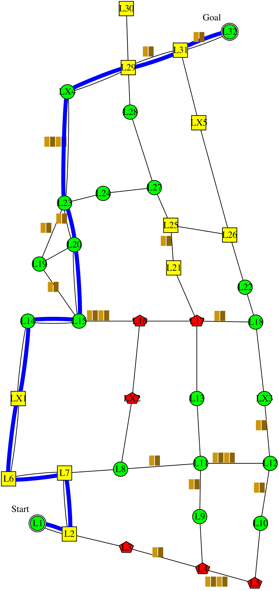

I'm planning to follow this policy . It is expected to have 0 collision; take 179 minutes; and have intrusiveness-penalty of 5: be non-intrusive 7 steps, somewhat-intrusive 5 steps, and very-intrusive 0 step. It has the lowest expected collision, and intrusiveness. Alternatively, following this policy would reduce the time to 153 minutes. However, I didn't choose that policy because it would increase the intrusiveness to 6: non-intrusive 8 steps, somewhat-intrusive 6 steps, and very-intrusive 0 step. The decrease in time is not worth the increase in intrusiveness.